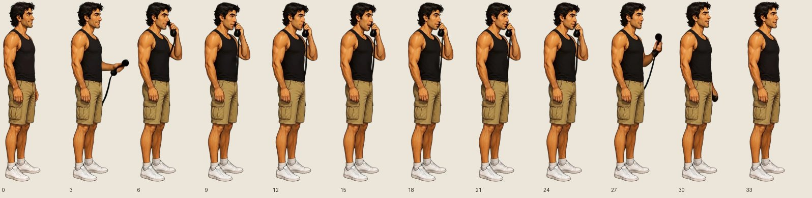
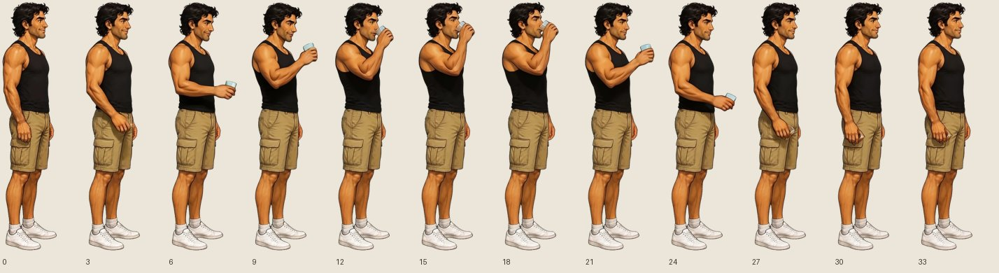
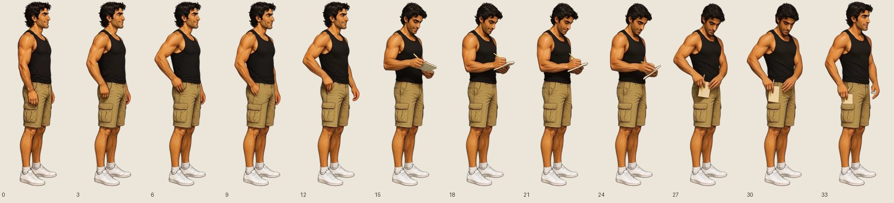
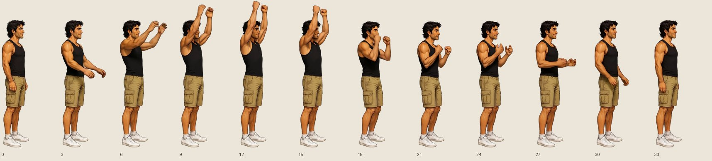
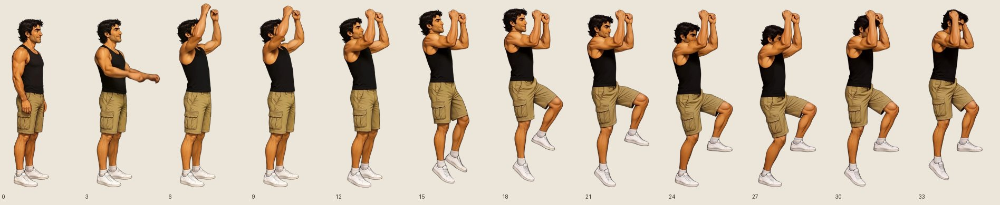
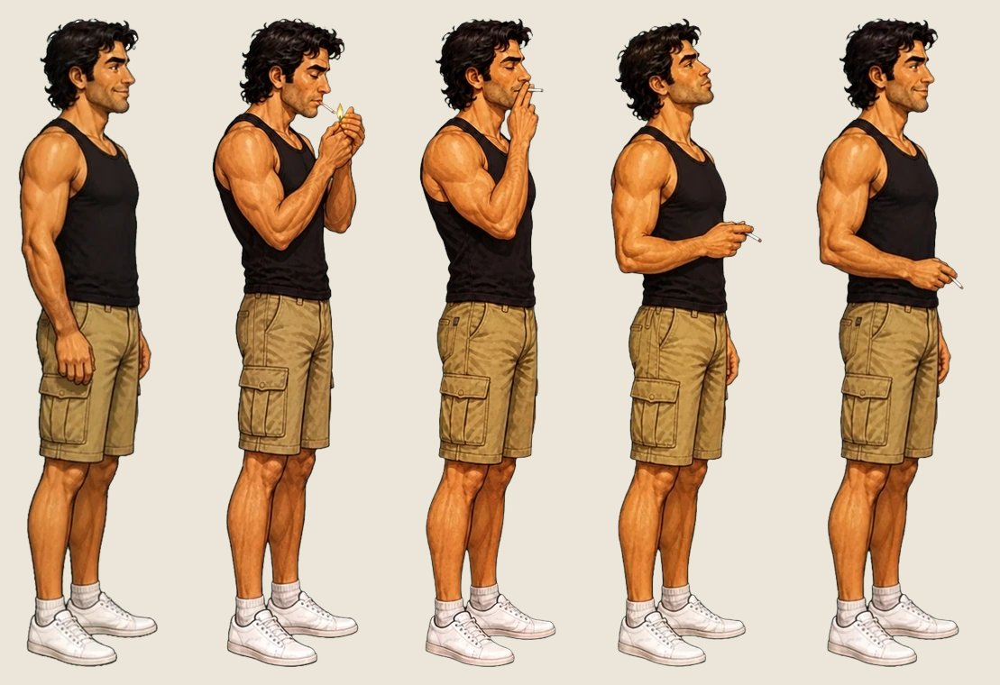
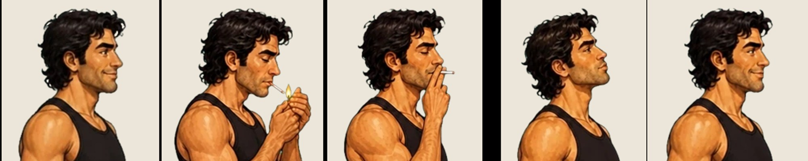

The game calls for Alan to act in 33 places and shows his standing sprite each time (actions were switched off on 29 October). Five Ludo animations of him in the vest already exist, made on 28–29 October. They still match his current sprite. Here they are, with my verdict, and the runs proposed for what's missing.
Every action starts on his standing sprite and ends on it (your note, 31 October). Checked on the existing five: phone, drink and pull end where they start (silhouette match 0.98); write doesn't (0.89: it ends with his hand at his pocket), so it's redone. Every new run is set to end on the standing sprite (Ludo's end keyframe).
Every call from the phone box (Tue–Sat), and the hotel phone on Sunday.
Good: the receiver up to his ear, talks, down again.

Rum at Rafa's bar; the coffee in 404 on Wednesday.
Good. It's a small glass: right for the rum, passable for the coffee.

The note for Vasco on Sunday.
Good: notebook from his pocket, writes, puts it back.

Was meant for the belfry clock and the grille.
A chain pulled down from above his head: wrong for winding the clock (a crank) and weak for the grille. New runs proposed below.

Was meant for climbing.
He mimes climbing up and ends floating in the air; Monday's ladder goes down. Not usable.

After 20 seconds with no input he lights a cigarette: light, then drag, breathe out, hold, round and round, the smoke drawn by the game from his mouth and the tip, a match struck; any click puts it away. Never in a church. The engine for it is already in the game; it needs his frames. The four poses are painted (below, next to his standing sprite). The in-betweens (standing → light → drag → breathe out → hold, round again, and hold → standing: he treads it out) are Ludo runs, written and ready.


The cigarette stays in one hand, his right (the arm nearest us), from the drag on; the first game switched hands, and so did my first drag pose: repainted. The in-betweens are told the same. Vest outfit; a blazer set would follow the same way once these are right.
Each is one Ludo run from his standing sprite (36 frames, from his standing sprite to a held pose and back to his standing sprite). Blazer versions only where the scene is in the blazer.
| Run | Outfit | Used for | What he does |
|---|---|---|---|
alanv_pickup | Vest | Wed boots, Sun packing, Sun the discs, Mon the fuse and the keys; with the water up to the shins it also reads as setting a disc | bends his knees and crouches, picks up something small from the floor in front of him with his right hand, looks at it, and stands up again holding it |
alanv_setdown | Vest | Mon: each disc into its socket, in the water | crouches and sets something small down carefully on the floor in front of him with his right hand, presses it into place, and stands up again |
alanv_reach | Vest | Sun the watch, the ticket back from the clerk, Mon Lorenzo's trowel; Sat salt from the footprint | reaches forward at chest height with his right hand, takes something small from someone, and brings his hand back to his side |
alanv_reachup | Vest | Wed the hand on the bell, Mon the crescent from Baute above | reaches up above his head with his right hand, takes hold of something small up there, and brings it down to his chest |
alanv_read | Vest | Wed the crate labels; Sun Elena's notebook | holds a few loose sheets of paper in both hands in front of his chest and reads them, turns a page, then lowers them |
alanv_stretch | Vest | Wed morning in 404 | just woken up: stretches both arms up above his head with a big yawn, rolls his shoulders, and lowers his arms |
alanv_crank | Vest | Wed the clock drum in the belfry (instead of the chain pull) | turns a heavy crank handle at waist height in front of him with both hands, round and round, leaning his weight into it |
alanv_rub | Vest | Wed the inscription rubbing on the bell | holds a sheet of paper flat against a surface in front of him at head height with his left hand and rubs a pencil back and forth across it with his right hand |
alanv_heave | Vest | Sun the vault grille, with Yeray and with Carmen | grips a heavy bar at waist height in front of him with both hands, leans back and heaves with his whole weight, straining, then lets go |
alanb_phone | Blazer | Tue evening's call, in the blazer | lifts an old telephone receiver to his ear with his right hand, listens and talks, then lowers it again |
alanb_read | Blazer | Thu the Montesdeoca file in Baute's drawer | holds a thin file of papers in both hands in front of his chest and leafs through it, then lowers it |
alanb_reachup | Blazer | Thu the map on its pins, just before the light comes on | reaches up above his head with his right hand towards something pinned on a wall, and freezes there |